17. Services web
Note : par service web, on entend ici toute application web délivrant des données brutes consommées par un client, un script console dans les exemples qui vont suivre. On ne s'intéresse pas à une technologie particulière, REST (REpresentational State Transfer) ou SOAP (Simple Object Access Protocol) par exemple, qui délivrent des données dans un format bien défini : JSON le plus souvent pour REST, XML pour SOAP. Chacune de ces technologies décrit précisément la façon dont le client doit interroger le serveur et la forme que doit prendre la réponse de celui-ci. Dans ce cours, on sera beaucoup plus souple quant à la nature de la requête du client et à celle de la réponse du serveur. Cependant, les scripts écrits et les outils utilisés sont proches de ceux de la technologie REST.
17.1. Introduction
Les programmes PHP pouvant être exécutés par un serveur web, un tel programme devient un programme serveur pouvant servir plusieurs clients. Du point de vue du client, appeler un service web revient à demander l'URL de ce service. Le client peut être écrit avec n'importe quel langage, notamment en PHP. Il nous faut par ailleurs savoir « converser » avec un service web, c'est-à-dire comprendre le protocole HTTP de communication entre un serveur web et ses clients. C'était le but du chapitre précédent, qui nous a fait découvrir une partie de ce protocole.

Dans leur version la plus simple, les échanges client / serveur sont les suivants :
- le client ouvre une connexion avec le port 80 du serveur web ;
- il fait une requête concernant un document ;
- le serveur web envoie le document demandé et ferme la connexion ;
- le client ferme à son tour la connexion .
Le document peut être de nature diverse : un texte au format HTML, une image, une vidéo… Ce peut être un document existant (document statique) ou bien un document généré à la volée par un script (document dynamique). Dans ce dernier cas, on parle de programmation web. Le script de génération dynamique de documents peut être écrit dans divers langages : PHP, Python, Java, JavaScript, C#, Ruby…
Dans la suite, nous allons utiliser des scripts PHP pour générer dynamiquement des documents texte.
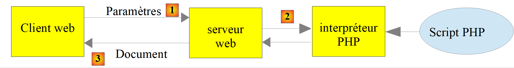
- en [1], le client ouvre une connexion avec le serveur, demande un script PHP, envoie ou non des paramètres à destination de ce script ;
- en [2], le serveur web fait exécuter le script PHP par l'interpréteur PHP. Le script génère un document qui est envoyé au client [3] ;
- le serveur clôt la connexion. Le client en fait autant .
Le serveur web peut traiter plusieurs clients à la fois.
Avec [Laragon], le serveur web est un serveur [Apache], un serveur open source de la fondation Apache (https://httpd.apache.org). Dans les applications qui suivent, [Laragon] doit être lancé et ses services démarrés (bouton [Start All] de la fenêtre de [Laragon]). Cela lance le serveur web [Apache] ainsi que le SGBD [MySQL]. Le serveur [Apache] de [Laragon] exécute les scripts PHP avec le module [mod_php] de la version de PHP sélectionnée dans [Laragon], ici PHP 8.5.
Nous avons écrit jusqu'à maintenant des scripts PHP exécutés dans un contexte console :
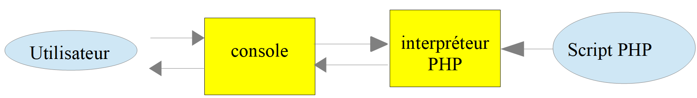
L'utilisateur utilise la console (le terminal de VS Code) pour demander l'exécution d'un script PHP et en recevoir les résultats.
Dans les applications client / serveur qui vont suivre :
- le script du client est exécuté dans un contexte console ;
- le script du serveur est exécuté dans un contexte web .
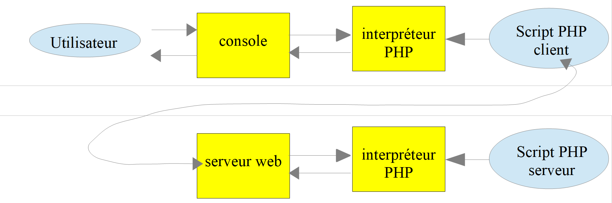
Le script PHP du serveur ne peut pas être n'importe où dans le système de fichiers. En effet, le serveur web cherche les documents statiques et dynamiques qu'on lui demande dans des endroits précisés par configuration. La configuration par défaut de [Laragon] fait que les documents sont cherchés dans le dossier [<laragon>/www] où [<laragon>] est le dossier d'installation de [Laragon] (par exemple [C:\laragon]). Ainsi si un client web demande un document D avec l'URL [http://localhost/D], le serveur web lui servira le document D de chemin [<laragon>/www/D].
Le dossier des codes de ce cours, [php8-oct-2026], a été placé dans le dossier [<laragon>/www] (cf. chapitre sur l'installation). Les scripts serveur de ce chapitre sont dans le dossier [php8-oct-2026/scripts-web]. Si un script serveur s'appelle [S.php], il sera demandé au serveur web avec l'URL [http://localhost/php8-oct-2026/scripts-web/S.php]. Le document [<laragon>/www/php8-oct-2026/scripts-web/S.php] lui sera alors servi.
Les scripts clients sont eux dans le dossier [php8-oct-2026/scripts-console/clients-web]. Voici l'organisation des deux dossiers (chaque dossier numéroté correspond à un paragraphe de ce chapitre) :
Dans VS Code, on ouvre le dossier [php8-oct-2026] (menu [File / Open Folder]). Tous les fichiers des scripts web et des scripts console sont alors accessibles dans l'explorateur de VS Code, et l'extension [PHP Intelephense] analyse le code des uns et des autres. Il n'y a pas de « projet web » à créer : pour le serveur [Apache], un script web est simplement un fichier [.php] placé sous le dossier [<laragon>/www].
Les clients HTTP utilisés dans ce chapitre sont :
- un navigateur (Chrome, Firefox, Edge…) ;
- l'outil en ligne de commande [curl], présent dans Windows 11 (et dans le terminal de [Laragon]). Dans un terminal [PowerShell], il faut taper [curl.exe] plutôt que [curl], car dans Windows PowerShell, [curl] est un alias de la commande [Invoke-WebRequest], qui n'a pas les mêmes options. Dans un terminal [Invite de commandes] (cmd) ou dans le terminal de [Laragon], [curl] suffit ;
- des scripts console PHP utilisant la bibliothèque [HttpClient] de Symfony .
Nous utiliserons [curl] avec quelques options :
option | rôle |
[-i] | affiche les entêtes HTTP de la réponse avant le document |
[-v] | mode verbeux : affiche aussi les entêtes HTTP envoyés par [curl] |
[-d nom=valeur] | envoie le paramètre par une requête POST |
[--data-urlencode "nom=valeur"] | idem, en url-encodant la valeur |
[-u login:mot_de_passe] | authentification [Basic] |
[-c fichier] / [-b fichier] | enregistre / renvoie les cookies reçus du serveur |
17.2. Écriture d'une page statique
Note : pour la suite, il faut que [Laragon] soit lancé.
Nous allons montrer comment créer une page statique HTML (HyperText Markup Language). Dans VS Code, nous créons le dossier [scripts-web/01] puis, dans ce dossier, le fichier [exemple-01.html]. Dans un fichier HTML vide, VS Code propose un modèle de page : il suffit de taper [!] puis la touche [Tab] (fonction [Emmet] de VS Code). Nous complétons ce modèle de la façon suivante :
- ligne 6 : le titre de la page ;
- ligne 9 : son contenu .
Maintenant faisons afficher cette page HTML par le serveur [Apache] de [Laragon]. Dans un navigateur, nous demandons l'URL [http://localhost/php8-oct-2026/scripts-web/01/exemple-01.html] :
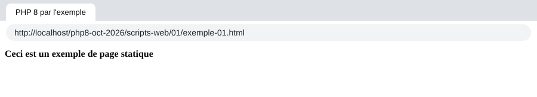
- en haut, l'onglet affiche le titre de la page et la barre d'adresse l'URL demandée ;
- en-dessous, le contenu de la page .
La page affichée est une page statique : on peut la recharger autant de fois que l'on veut dans le navigateur (F5), c'est toujours le même contenu qui est affiché.
La plupart des navigateurs donnent accès aux données échangées entre le client et le serveur, celles qui ont été décrites au chapitre précédent : on tape F12 pour ouvrir les outils de développement, puis on choisit l'onglet [Réseau] (Network) et on recharge la page (F5). En cliquant sur le document chargé, on voit la commande envoyée au serveur, les entêtes HTTP de la requête du navigateur, ceux de la réponse du serveur, puis le document reçu.
L'outil [curl] permet de voir les mêmes informations dans un terminal. Avec l'option [-i], il affiche les entêtes HTTP de la réponse du serveur, puis le document reçu :
- ligne 2 : la ligne de statut de la réponse : version du protocole HTTP, code de statut [200] et son libellé [OK] ;
- viennent ensuite les entêtes HTTP de la réponse. On y trouve notamment la date de la réponse [Date], la signature du serveur [Server], la date de dernière modification du document [Last-Modified], sa taille en octets [Content-Length] et sa nature [Content-Type] ;
- puis une ligne vide, qui sépare les entêtes du document ;
- enfin le document HTML que nous avons construit. Un navigateur interprète ce code pour afficher la page vue plus haut .
17.3. Création d'une page dynamique en PHP
Nous écrivons maintenant une page dynamique en PHP. Dans le dossier [scripts-web/01], nous créons le fichier [exemple-01.php] suivant :
Commentaires
- ligne 5 : le titre de la page ;
- ligne 8 : le code PHP est placé entre les balises [<?php] et [?>]. Tout ce qui est en dehors de ces balises est du HTML ;
- ligne 17 : écrit la date et l'heure du moment présent. La fonction [time] rend le nombre de secondes écoulées depuis le 1er janvier 1970 à 0 h UTC. La fonction [date] met ce nombre au format indiqué par son 1er paramètre, ici jour/mois/année heures:minutes:secondes .
Basiquement, le script PHP ci-dessus écrit l'heure courante sur la console. Cependant, lorsqu'il est exécuté par un serveur web, le flux de sortie de l'instruction [print], qui est habituellement associé à la console d'exécution du script, est redirigé vers la connexion qui lie le serveur à son client. Donc, dans un contexte web, le script ci-dessus envoie l'heure courante sous forme de texte au client, ici un navigateur.
Demandons l'URL [http://localhost/php8-oct-2026/scripts-web/01/exemple-01.php] :
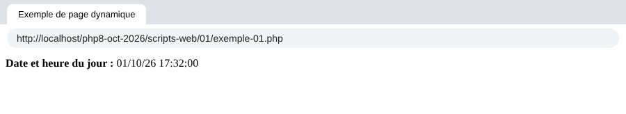
Nous avons ici une page dynamique car si on recharge plusieurs fois la page dans le navigateur (F5), son contenu change (l'heure change).
Le navigateur a reçu un flux HTML. Pour connaître celui-ci, on peut afficher le code source de la page dans le navigateur (clic droit sur la page, option [Afficher le code source de la page], ou Ctrl-U), ou utiliser [curl] :
- après la ligne vide, le code HTML reçu. Le code PHP a disparu : il a été remplacé par le texte qu'il a produit, la date et l'heure ;
- parmi les entêtes, l'entête [X-Powered-By] n'était pas présent lorsqu'on a demandé la page statique. Il montre que la réponse du serveur a été générée par un script PHP. Les entêtes [Last-Modified] et [ETag] ont, eux, disparu : le document n'existe pas sur le disque, il est fabriqué au moment de la requête. L'entête [Content-Length] est toujours là : le document étant court, [Apache] a pu le recevoir en entier avant d'envoyer les entêtes, et donc en calculer la taille .
Il faut donc se rappeler qu'un script PHP destiné à être exécuté par un serveur web pour un navigateur doit produire un flux HTML. Nous verrons que le script peut également générer les entêtes HTTP et à peu près tous les éléments de la réponse du serveur.
17.4. Rudiments du langage HTML
Ce chapitre ne va pas s'appesantir sur la programmation web en PHP. Une application web MVC est développée plus loin dans ce cours. Ce chapitre s'intéresse plutôt aux services web : des pages PHP qui délivrent, via un serveur web, des données à destination d'autres clients PHP. Néanmoins il nous a semblé utile de donner quelques rudiments de HTML au lecteur.
Un navigateur web peut afficher divers documents, le plus courant étant le document HTML (HyperText Markup Language). Celui-ci est un texte formaté avec des balises de la forme [<balise>texte</balise>]. Ainsi le texte [<b>important</b>] affichera le texte important en gras. Il existe des balises seules, telles que la balise [<hr>] qui affiche une ligne horizontale. Nous ne passerons pas en revue les balises que l'on peut trouver dans un texte HTML. Une bonne référence est le site de documentation de Mozilla : https://developer.mozilla.org/fr/docs/Web/HTML. La connaissance du langage HTML est indispensable puisque les applications web dynamiques doivent générer elles-mêmes le code HTML à envoyer aux clients web.
Pour résumer, il n'est nul besoin de connaître la totalité du langage HTML pour démarrer la programmation web. Une façon de découvrir les subtilités du langage HTML est de parcourir le web et d'afficher le code source des pages qui présentent des caractéristiques intéressantes et encore inconnues pour vous.
Considérons l'exemple suivant [balises.html] qui présente quelques éléments qu'on peut trouver dans un document web tels que :
- un tableau ;
- une image ;
- un lien .
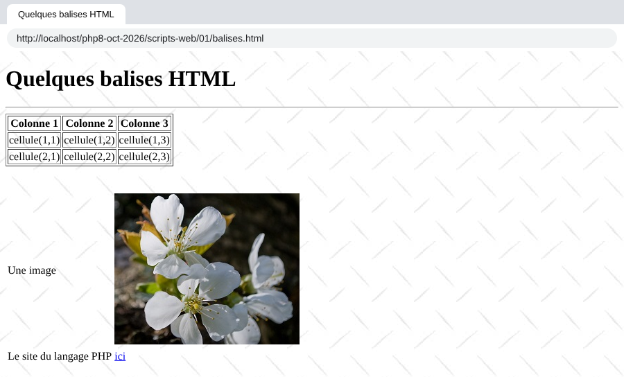
Un document HTML a la forme générale suivante :
L'ensemble du document est encadré par les balises [<html>…</html>]. Il est formé de deux parties :
- [<head>…</head>] : c'est la partie non affichable du document. Elle donne des renseignements au navigateur qui va afficher le document. On y trouve souvent la balise [<title>…</title>] qui fixe le texte qui sera affiché dans l'onglet du navigateur. On peut y trouver d'autres balises, notamment des balises définissant les mots clés du document, mots clés utilisés ensuite par les moteurs de recherche. On peut trouver également dans cette partie des scripts, écrits en JavaScript, qui seront exécutés par le navigateur ;
- [<body attributs>…</body>] : c'est la partie qui sera affichée par le navigateur. Les balises HTML contenues dans cette partie indiquent au navigateur la forme visuelle « souhaitée » pour le document .
Le code HTML de notre document exemple est le suivant :
élément | balises et exemples HTML | ||
titre du document | [<title>Quelques balises HTML</title>] (ligne 5) : le texte [Quelques balises HTML] apparaîtra dans l'onglet du navigateur qui affichera le document | ||
barre horizontale | [<hr>] : affiche un trait horizontal (ligne 10) | ||
tableau | [<table attributs>….</table>] : pour définir le tableau (ligne 12) ; [<thead>…</thead>] : pour définir les entêtes des colonnes ({{L:<thead> | </thead>}}) ; [<tbody>…</tbody>] : pour définir le contenu du tableau ({{L:<tbody> | </tbody>}}) ; [<tr attributs>…</tr>] : pour définir une ligne (ligne 21) ; [<td attributs>…</td>] : pour définir une cellule (ligne 22) ; exemples : [<table border="1">…</table>] : l'attribut [border] définit l'épaisseur de la bordure du tableau ; [<td style="text-align: center;">cellule(1,2)</td>] (ligne 23) : définit une cellule dont le contenu sera [cellule(1,2)]. Ce contenu sera centré horizontalement ([text-align: center]) |
image | [<img src="images/cerisier.jpg" alt="un cerisier">] (ligne 37) : définit une image dont le fichier source est [images/cerisier.jpg] sur le serveur web. L'attribut [alt] donne un texte de remplacement, affiché si l'image ne peut l'être. Cette balise se trouve dans un document web obtenu avec l'URL [http://localhost/php8-oct-2026/scripts-web/01/balises.html]. Aussi le navigateur demandera-t-il l'URL [http://localhost/php8-oct-2026/scripts-web/01/images/cerisier.jpg] pour avoir l'image référencée ici | ||
lien | [<a href="https://www.php.net/">ici</a>] (ligne 41) : fait que le texte [ici] sert de lien vers l'URL [https://www.php.net/] | ||
fond de page | [<body style="background-image: url(images/standard.jpg)">] (ligne 8) : indique que l'image qui doit servir de fond de page se trouve à l'URL [images/standard.jpg] du serveur web. Dans le contexte de notre exemple, le navigateur demandera l'URL [http://localhost/php8-oct-2026/scripts-web/01/images/standard.jpg] pour obtenir cette image de fond |
On voit dans ce simple exemple que pour construire l'intégralité du document, le navigateur doit faire trois requêtes au serveur :
- [http://localhost/php8-oct-2026/scripts-web/01/balises.html] pour avoir le source HTML du document ;
- [http://localhost/php8-oct-2026/scripts-web/01/images/cerisier.jpg] pour avoir l'image [cerisier.jpg] ;
- [http://localhost/php8-oct-2026/scripts-web/01/images/standard.jpg] pour obtenir l'image de fond [standard.jpg] .
C'est ce que montre l'onglet [Réseau] des outils de développement du navigateur (F12) : on y voit les trois requêtes faites par le navigateur.
Note : sous Windows, les noms de fichiers ne sont pas sensibles à la casse : [Cerisier.jpg] et [cerisier.jpg] désignent le même fichier. Ce n'est pas le cas sur un serveur Linux, où sont hébergés la plupart des sites web. Il faut donc prendre l'habitude d'écrire dans les URL les noms de fichiers exactement comme ils sont écrits sur le disque.
17.5. Rendre dynamique une page statique
Montrons comment nous pouvons dynamiser la page HTML [exemple-01.html]. Copions son contenu dans un fichier [page-00.php]. Ce script PHP ne contient pas de PHP, uniquement du HTML. Demandons-le au serveur :
L'interpréteur PHP a interprété le script [page-00.php] et a produit le même flux HTML que la page statique [exemple-01.html]. On apprend ainsi une chose : lorsque l'interpréteur PHP trouve du HTML dans un script PHP, il n'y touche pas et l'envoie tel quel au client.
Maintenant mettons quelques instructions PHP dans le script [page-01.php] suivant pour que l'interpréteur PHP ait quelque chose à faire :
- ligne 4 et ligne 9 : on a mis du code PHP pour générer dynamiquement le titre et le contenu de la page. On fait ici l'hypothèse que la variable [$page] est un objet qui a les données à afficher. La balise [<?= expression ?>] est un raccourci pour [<?php print expression ?>]. Elle est faite pour ce genre de page : du HTML avec quelques valeurs calculées par PHP .
Si nous demandons directement ce script, nous obtenons le résultat suivant :
- lignes 5-8 : le titre de la page n'a pu être calculé parce que la variable [$page] n'était pas définie. PHP a inséré deux messages d'avertissement dans le flux HTML : la variable [$page] n'existe pas, et on ne peut pas lire la propriété [title] de [null] ;
- lignes 14-17 : pareil pour le contenu .
Note : depuis PHP 8.0, l'utilisation d'une variable non définie et la lecture d'une propriété sur [null] produisent un avertissement [Warning] et non plus une simple [Notice] comme en PHP 7. Les messages s'affichent dans la page parce que la configuration de PHP de [Laragon] est une configuration de développement ([display_errors=On]). Sur un serveur en production, on met [display_errors=Off] et les erreurs sont écrites dans un fichier de logs.
Maintenant, écrivons le script web [exemple-02.php] suivant :
- ligne 3 : comme tous les scripts PHP de ce cours, ce script demande la vérification stricte des types ;
- lignes 6-8 : on définit l'objet [$page]. La classe prédéfinie [stdClass] est la seule classe (avec les classes marquées par l'attribut [#[\AllowDynamicProperties]]) à laquelle on peut encore ajouter des propriétés non déclarées sans avertissement : depuis PHP 8.2, la création de propriétés dynamiques sur les objets des autres classes est obsolète (deprecated) ;
- ligne 10 : on inclut le script [page-01.php]. Le code de ce script va être interprété à son tour :
- la variable [$page] est maintenant définie et l'interpréteur PHP va l'utiliser ;
- le code HTML de [page-01.php] va être envoyé tel quel au client ;
- les résultats des expressions [<?= … ?>] vont être inclus dans le flux texte envoyé au client .
Maintenant si nous demandons le script web [exemple-02.php], nous obtenons la chose suivante dans le navigateur :
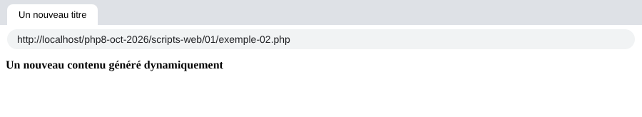
Et voici le texte reçu par le navigateur :
- lignes 5 et 10 : les codes PHP de [page-01.php] ont été remplacés par les valeurs des expressions [$page->title] et [$page->contents] .
De cet exemple, on retiendra deux choses :
- les pages HTML destinées au navigateur peuvent être isolées dans des scripts PHP ne contenant que ce code HTML et quelques parties dynamiques générées par du code PHP. Il doit y avoir le moins de PHP possible dans ces pages ;
- toute la logique qui génère les données dynamiques incluses dans les pages HTML doit être isolée dans des scripts PHP purs, ne comportant aucun code de présentation des pages (HTML, CSS, JavaScript…) .
Cela autorise une séparation des tâches :
- la tâche de réalisation des pages web à afficher (HTML, CSS, JavaScript…) ;
- la tâche de la logique de l'application web que l'on construit. Cette logique pourra être implémentée avec une architecture en couches, exactement comme nous l'avons fait avec les scripts console .
Note : une valeur insérée dans une page HTML doit normalement être protégée par la fonction [htmlspecialchars], qui remplace les caractères spéciaux du HTML ([<], [>], [&], ["]) par leur code HTML. Sinon, une valeur venant d'un utilisateur et contenant par exemple une balise [<script>] serait exécutée par le navigateur (faille XSS). Nous y reviendrons lorsque nous écrirons des pages HTML.
Par la suite, nous allons construire des scripts web particuliers :
- ils n'enverront que des données au client et aucune décoration (HTML, CSS, JavaScript). Ce seront donc des serveurs de données plutôt que des pages web ;
- les clients de ces scripts web seront des scripts console qui se chargeront de récupérer les données envoyées par le serveur et d'en faire quelque chose .
17.6. Application client / serveur de date / heure
Nous nous plaçons maintenant dans la configuration suivante :
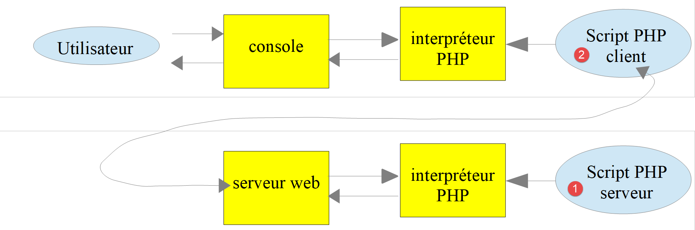
Nous allons écrire :
- un script web [1] qui envoie à son client la date et l'heure du moment présent ;
- un script console [2] qui sera le client du script web : il va récupérer la date et l'heure envoyées par le script web et les afficher sur la console .
17.6.1. Le script serveur
Nous avons déjà écrit un script web générant la date et l'heure du moment présent, le script [exemple-01.php] du paragraphe précédent. Nous avons dit que nous allions écrire des serveurs de données : des données brutes sans habillage HTML. Le script serveur [date-time-server.php] sera alors le suivant :
- ligne 6 : les fonctions de date utilisent le fuseau horaire fixé par la directive [date.timezone] du fichier [php.ini]. Pour ne pas dépendre de la configuration du serveur, le script fixe lui-même le fuseau horaire, ici celui de Paris ;
- ligne 8 : la fonction [header] ajoute un entête HTTP à la réponse. On fixe ici l'entête HTTP [Content-Type] qui dit au client la nature du document qu'il va recevoir. Pour la page [exemple-01.php], le [Content-Type] était [text/html; charset=UTF-8]. Ici, nous indiquons au client que le document est du texte sans habillage HTML. Ce n'est pas important pour notre client console qui ne cherchera pas à exploiter cet entête. C'est plus important pour les navigateurs qui, eux, exploitent cet entête. Les entêtes HTTP précèdent le document dans la réponse du serveur : la fonction [header] doit donc être appelée avant que le script n'ait écrit quoi que ce soit ;
- ligne 19 : le document envoyé au client : la date et l'heure, sans balise HTML .
Demandons ce script avec un navigateur :
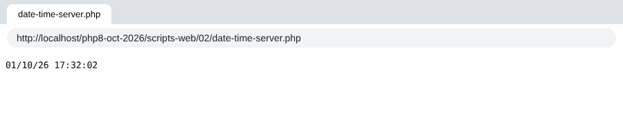
Le navigateur affiche le texte brut reçu. Avec [curl], on voit l'entête HTTP [Content-Type] fixé par le script et, après la ligne vide, le document texte reçu :
17.6.2. Le script client
Au chapitre précédent, nous avons écrit plusieurs clients HTTP. Nous pourrions les utiliser pour récupérer le document texte envoyé par le script serveur [date-time-server.php]. Nous n'allons pas le faire. Comme nous l'avons fait pour les protocoles SMTP et IMAP, nous allons utiliser une bibliothèque tierce, à savoir le composant [HttpClient] du framework Symfony, dont la documentation est à l'URL https://symfony.com/doc/current/http_client.html.
Comme les bibliothèques précédentes, le composant [HttpClient] s'installe avec l'outil [Composer]. Dans un terminal ouvert sur le dossier [php8-oct-2026], la commande serait :
Ce n'est pas utile ici : le fichier [composer.json] du dossier [php8-oct-2026] déclare déjà cette dépendance (en version 8) ainsi que celle du composant [HttpFoundation] que nous utiliserons bientôt. La commande [composer install] faite lors de l'installation des codes du cours les a installées dans le dossier [php8-oct-2026/vendor].
Le script console [date-time-client.php] exploitera le fichier JSON [config-date-time-client.json] suivant :
- ligne 2 : l'URL du script serveur .
Le script client [date-time-client.php] est le suivant :
Commentaires
- ligne 8 : comme nous l'avons fait pour les bibliothèques précédentes, nous chargeons le fichier [vendor/autoload.php] généré par [Composer]. Son chemin est calculé à partir de la constante [__DIR__], le dossier du script : le script fonctionne quel que soit l'emplacement du dossier [php8-oct-2026] ;
- ligne 10 : nous déclarons la classe [HttpClient] que nous allons utiliser ;
- ligne 11 : l'interface [ExceptionInterface] est implémentée par toutes les exceptions que peut lancer le client HTTP de Symfony ;
- ligne 14 : le nom du fichier de configuration peut être passé en argument du script : [php date-time-client.php autre-config.json]. Sinon, c'est le fichier [config-date-time-client.json] qui est utilisé. Le tableau [$argv] contient les arguments de la ligne de commande, [$argv[0]] étant le nom du script. L'opérateur [??] rend son opérande gauche s'il existe et n'est pas [null], son opérande droit sinon ;
- lignes 17-25 : on récupère la configuration du script dans le tableau [$config]. Le paramètre nommé [flags: JSON_THROW_ON_ERROR] demande à [json_decode] de lancer une exception [JsonException] si le JSON est incorrect, au lieu de rendre [null] silencieusement ;
- ligne 29 : on crée un client HTTP. La méthode statique [create] choisit l'implémentation la mieux adaptée : ici la classe [CurlHttpClient], qui utilise l'extension [curl] de PHP ;
- ligne 33 : on demande l'URL du script serveur à l'aide d'une commande GET : [GET URL HTTP/1.1]. Cette opération est asynchrone : l'exécution se poursuit à la ligne suivante sans attendre que la réponse soit obtenue ;
- ligne 35 : on demande le code de statut de la réponse. Celui-ci se trouve dans la 1re ligne de la réponse du serveur. Ainsi si cette ligne est [HTTP/1.1 200 OK], le statut de la réponse est 200. Cette opération est bloquante : on n'en revient que lorsque le client a reçu les entêtes de la réponse du serveur ;
- ligne 39 : on demande les entêtes HTTP de la réponse. On obtient un tableau associatif dont les clés sont les noms des entêtes, en minuscules, et les valeurs des tableaux : un même entête peut en effet apparaître plusieurs fois dans une réponse. On affiche ici la 1re valeur de chaque entête ;
- ligne 43 : on demande le document renvoyé par le serveur : on sait que ce document est ici un texte ;
- ligne 46 : en cas d'erreur, on affiche le message d'erreur. Le script PHP 7 interceptait les exceptions [TypeError | RuntimeException] ; il est plus précis d'intercepter les exceptions du client HTTP, qui implémentent toutes [ExceptionInterface]. On notera que [getHeaders] et [getContent] lancent une exception lorsque le code de statut de la réponse indique une erreur (codes 300 à 599). Nous le verrons dans le paragraphe sur l'authentification .
Le client s'exécute dans un terminal ouvert sur son dossier (il faut que [Laragon] soit lancé pour que le script serveur puisse être atteint) :
On récupère bien la date et l'heure du moment présent sur la dernière ligne. Les entêtes affichés sont ceux que nous avons vus avec [curl], avec des noms en minuscules.
On peut avoir la curiosité de savoir ce qu'a envoyé le script client au serveur. Au chapitre précédent, nous avons utilisé pour cela un serveur TCP générique qui affiche les lignes de texte qu'il reçoit. Nous écrivons ici un petit serveur TCP « espion » [spy-server.php] qui fait la même chose, puis renvoie au client une réponse HTTP minimale :
- ligne 9 : le port d'écoute est passé en argument, 100 par défaut ;
- ligne 11 : création d'un service TCP sur le port [port] de la machine locale ;
- ligne 18 : attente d'un client ;
- ligne 27 : lecture et affichage des lignes reçues jusqu'à la ligne vide qui termine les entêtes HTTP. Au passage, on note la valeur de l'entête [Content-Length] qui donne la taille du document qui suit éventuellement les entêtes ;
- lignes 40-41 : lecture et affichage de ce document ;
- lignes 45-50 : envoi d'une réponse HTTP minimale : ligne de statut, entêtes, ligne vide, document ;
- ligne 52 : on ferme la connexion avec le client pour que celui-ci détecte qu'il a eu la totalité de la réponse .
Nous lançons le serveur espion dans un premier terminal :
Le fichier de configuration [config-espion.json] désigne le port 100 de la machine locale :
Cette fois-ci, le client contacte le serveur [localhost] sur le port 100. C'est donc notre serveur espion qui va être sollicité. Dans un second terminal, nous exécutons le client avec cette configuration :
- ligne 7 : le client a bien reçu le document envoyé par le serveur espion .
Dans le premier terminal, le serveur espion a affiché ce qu'il a reçu :
- ligne 5 : la commande HTTP GET construite par le script client ;
- ligne 6 : l'entête [Host] indique la machine et le port visés ;
- ligne 8 : la signature du client [HttpClient] de Symfony ;
- ligne 9 : le client indique qu'il accepte une réponse compressée au format [gzip] ;
- ligne 10 : la ligne vide qui termine les entêtes. Une requête GET n'a pas de document .
17.6.3. Le script serveur – version 2
De base, les fonctions PHP pour écrire un script web ne sont pas orientées objet. Côté serveur, on est alors amené à mélanger classes et fonctions PHP classiques. Pour avoir une écriture plus homogène, nous allons utiliser la bibliothèque [HttpFoundation] du framework Symfony. Elle encapsule toutes les fonctions PHP classiques d'un script web dans un système de classes et d'interfaces : la classe [Request] représente la requête du client, la classe [Response] la réponse du serveur. La documentation de la bibliothèque est disponible à l'URL https://symfony.com/doc/current/components/http_foundation.html.
Comme [HttpClient], la bibliothèque [HttpFoundation] (version 8) est déjà installée dans le dossier [vendor]. Elle aurait été installée par la commande :
La seconde version du serveur [date-time-server-2.php] est la suivante :
Commentaires
- ligne 8 : chargement des bibliothèques installées par [Composer]. Le script est dans le dossier [scripts-web/02] : le dossier [vendor] est deux niveaux au-dessus ;
- ligne 10 : la classe [Response] de la bibliothèque [HttpFoundation] gère la totalité de la réponse aux clients du service web ;
- lignes 16-20 : création de la réponse. Le constructeur de la classe [Response] a trois paramètres : le document envoyé au client (ici la date et l'heure), le code de statut de la réponse (ici la constante [Response::HTTP_OK] qui vaut 200) et un tableau d'entêtes HTTP. Nous utilisons les arguments nommés de PHP 8.0 ([content:], [status:], [headers:]) : ils rendent l'appel plus lisible et dispensent de respecter l'ordre des paramètres ;
- ligne 22 : la réponse est du texte UTF-8. [HttpFoundation] ajoutera [charset=UTF-8] à l'entête [Content-Type] ;
- ligne 25 : on envoie la réponse au client : la ligne de statut, les entêtes, puis le document. La méthode [send] utilise les fonctions [http_response_code], [header] et [print] que nous aurions utilisées nous-mêmes .
Avec [curl] :
- ligne 2 : le code 200 de la réponse ;
- l'entête [Cache-Control] a été ajouté par [HttpFoundation]. Il indique que la réponse ne doit pas être mise en cache par un intermédiaire (un proxy) ;
- l'entête [Content-type] est celui fixé par le script, complété par le jeu de caractères ;
- la dernière ligne est le document .
17.6.4. Le script client – version 2
Le script client ne change pas. On lui donne seulement un autre fichier de configuration [config-date-time-client-2.json] :
Les résultats sont les mêmes que dans la version 1 :
17.7. Un serveur de données JSON
La réponse d'un script web peut être composée de plusieurs données qu'on peut rassembler dans des tableaux et des objets. Le script peut alors envoyer ces divers éléments au sein d'une chaîne JSON que le client décodera.
17.7.1. Le script serveur
Le script [json-server.php] utilise la classe [Personne] suivante :
Commentaires
- ligne 5 : la classe appartient à l'espace de noms [Modèles]. PHP accepte les caractères accentués dans les identifiants ;
- ligne 7 : la classe implémente l'interface PHP [JsonSerializable]. Cela lui impose d'implémenter la méthode [jsonSerialize] (lignes 39-43). La méthode doit rendre une valeur qui sera sérialisée en JSON, ici un tableau associatif. Lorsqu'on utilise l'expression [json_encode($personne)], la fonction [json_encode] regarde si la classe [Personne] implémente l'interface [JsonSerializable]. Si oui, l'expression devient [json_encode($personne->jsonSerialize())] ;
- lignes 11-15 : le constructeur utilise la promotion des propriétés de PHP 8.0 : chaque paramètre précédé d'une visibilité déclare une propriété et l'initialise. Les trois paramètres ont une valeur par défaut ;
- ligne 12 : la visibilité asymétrique, apparue avec PHP 8.4 : la propriété est lisible de partout ([public]) mais ne peut être modifiée que dans la classe ([private(set)]). On peut donc écrire [$personne->nom] en lecture, sans getter, mais pas [$personne->nom = "x"] hors de la classe. Le PHP 7 de 2019 nous obligeait à déclarer des propriétés privées et à écrire un getter pour chacune ;
- lignes 19-22 : une méthode de construction (on dit aussi une fabrique) d'un objet [Personne] à partir d'un tableau associatif. L'expression [new static(...$assoc)] passe les éléments du tableau au constructeur. Depuis PHP 8.1, l'opérateur [...] accepte des tableaux à clés chaînes : chaque clé devient un argument nommé. Ainsi [Personne::fromArray(["nom" => "x", "âge" => 3])] équivaut à [new Personne(nom: "x", âge: 3)]. Une clé qui n'est pas un paramètre du constructeur provoque une erreur. La version PHP 7 de la classe recopiait les éléments du tableau dans des propriétés de nom quelconque, ce qui pourrait créer des propriétés dynamiques, obsolètes depuis PHP 8.2 ;
- lignes 26-29 : le seul setter de la classe. Il rend l'objet lui-même (type de retour [static]), ce qui permet d'enchaîner les appels ;
- ligne 43 : la fonction [get_object_vars] rend le tableau associatif [propriété => valeur] de l'objet ;
- ligne 47 : la fonction statique [jsonUnserialize] permet de créer un objet [Personne] à partir de sa chaîne JSON .
Le script [json-server.php] est le suivant :
Commentaires
- ligne 7 et ligne 9 : on importe la classe [Personne] ;
- ligne 13 : on crée un objet [Personne] avec des arguments nommés ;
- lignes 15-21 : on crée un tableau associatif à deux niveaux ;
- ligne 24 : le document envoyé au client est la chaîne JSON d'un tableau :
- l'élément [$personne] sera sérialisé en JSON grâce à sa méthode [jsonSerialize] ;
- l'élément [$assoc] sera nativement sérialisé en JSON ;
- l'option [JSON_THROW_ON_ERROR] fait que [json_encode] lance une exception en cas d'erreur (par exemple une chaîne qui ne serait pas en UTF-8) au lieu de rendre [false] ;
- ligne 25 : on indique que le document est de type [application/json]. À la réception de cet entête, les navigateurs proposent une mise en forme de la chaîne JSON .
Si on demande ce script avec un navigateur (Chrome ici), on obtient la réponse suivante :

On remarquera l'encodage des caractères accentués : par défaut, [json_encode] remplace tout caractère non ASCII par sa séquence Unicode [\uXXXX] ([û] devient [\u00fb]). La case [Pretty-print] de Chrome affiche le JSON indenté. Avec [curl] :
- l'entête [Content-Type] donne le type [application/json] du document ;
- la dernière ligne est la chaîne JSON reçue .
17.7.2. Le client
Le client [json-client.php] est configuré par le fichier JSON [config-json-client.json] suivant :
Il utilise une copie de la classe [Personne] du serveur, placée dans son dossier. Le script [json-client.php] est le suivant :
Commentaires
- ligne 9 et ligne 11 : importation de la classe [Personne] ;
- ligne 16 : ce client utilise toujours le même fichier de configuration, dont le nom est une constante ;
- ligne 31 : création du client HTTP ;
- ligne 45 : la méthode [toArray] de la réponse décode le document JSON reçu et rend le tableau PHP correspondant. Elle lance une exception si le document n'est pas du JSON. On sait que ce qui a été encodé est un tableau à deux éléments. L'affectation par décomposition [[$personne, $assoc] = …] (on dit aussi déstructuration) range ces deux éléments dans deux variables. Elle remplace l'ancienne écriture [list($personne, $assoc) = …] ;
- ligne 47 : on crée un objet [Personne] à partir du tableau de ses propriétés, pour l'afficher ensuite (ligne 50). L'objet est converti en chaîne par sa méthode [__toString] ;
- ligne 51 : on affiche le second tableau associatif. L'instruction [print] ne sait pas afficher des tableaux. Aussi transforme-t-on celui-ci en chaîne JSON. Pour avoir les caractères accentués tels quels, il faut ajouter l'option [JSON_UNESCAPED_UNICODE]. On a vu qu'en son absence les caractères accentués sont encodés dans la chaîne JSON .
L'exécution du script client donne les résultats suivants :
Sur les deux dernières lignes, on a récupéré correctement les caractères accentués.
17.8. Récupération des variables d'environnement du service web
Un script serveur s'exécute dans un environnement web qu'il peut connaître. Cet environnement est stocké dans le tableau [$_SERVER], une variable globale de PHP. Si nous utilisons la bibliothèque [HttpFoundation], cet environnement est trouvé dans la propriété [server] de l'objet [Request] qui représente la requête HTTP traitée par le script web.
17.8.1. Le script serveur
Nous écrivons une application serveur qui envoie à ses clients son environnement d'exécution. Le script web [env-server.php] est le suivant :
- ligne 12 : on crée l'objet de type [Request] qui encapsule la totalité des informations disponibles sur la requête HTTP reçue par le script web ainsi que sur son environnement d'exécution. La méthode statique [createFromGlobals] construit cet objet à partir des variables globales de PHP : [$_GET], [$_POST], [$_COOKIE], [$_FILES] et [$_SERVER] ;
- ligne 15 : l'information envoyée au client est la chaîne JSON de l'objet [$request->server], qui représente l'environnement d'exécution du script web. C'est un objet de type [ServerBag], une sorte de dictionnaire. [$request->server->all()] est, lui, un vrai tableau associatif, le contenu du [ServerBag]. Sans [HttpFoundation], on aurait écrit [json_encode($_SERVER)]. L'option [JSON_UNESCAPED_SLASHES] évite que les caractères [/] des chemins soient encodés en [\/] ;
- ligne 20 : on envoie la réponse .
Si on demande ce script avec un navigateur, celui-ci affiche le dictionnaire JSON des variables d'environnement.
17.8.2. Le script client
Le script client [env-client.php] est configuré par le fichier JSON [config-env-client.json] suivant :
- ligne 2 : l'URL du script serveur ;
- lignes 3-9 : les noms des variables d'environnement que le client affichera. Sans cette clé, il les affiche toutes .
Le script client [env-client.php] est le suivant :
Commentaires
- ligne 43 : on décode la réponse JSON du serveur. On obtient un tableau associatif ;
- lignes 45-46 : l'environnement est long. Si le fichier de configuration contient une liste [display] de noms de variables, on ne garde que celles-ci. La fonction [array_filter] garde les éléments d'un tableau pour lesquels la fonction passée en paramètre rend [true]. Avec l'option [ARRAY_FILTER_USE_KEY], cette fonction reçoit la clé de l'élément et non sa valeur ;
- lignes 48-49 : on affiche toutes les valeurs de ce tableau associatif .
On obtient le résultat console suivant (le chemin du dossier [php8-oct-2026] est abrégé en [.../php8-oct-2026]) :
Voici la signification de ces variables, et de quelques autres que le serveur envoie aussi :
variable | signification |
HTTP_HOST | la valeur xxx de l'entête HTTP [Host: xxx] envoyé par le client |
HTTP_USER_AGENT | la valeur xxx de l'entête HTTP [User-Agent: xxx] envoyé par le client |
HTTP_ACCEPT_ENCODING | la valeur xxx de l'entête HTTP [Accept-Encoding: xxx] envoyé par le client |
PATH | le chemin des exécutables sur la machine sur laquelle s'exécute le script serveur |
SERVER_SIGNATURE | la signature du serveur web, ajoutée par [Apache] aux pages qu'il génère lui-même (pages d'erreur, listes de fichiers) |
SERVER_SOFTWARE | le type du serveur web |
SERVER_NAME | le nom Internet de la machine du serveur web |
SERVER_PORT | le port d'écoute du serveur web |
SERVER_ADDR | l'adresse IP de la machine du serveur web |
REMOTE_ADDR | l'adresse IP du client. Ici le client était sur la même machine que le serveur |
REMOTE_PORT | le port à partir duquel le client a fait sa demande |
DOCUMENT_ROOT | la racine de l'arborescence des documents servis par le serveur web, [<laragon>/www] avec [Laragon] |
REQUEST_SCHEME | le protocole de l'URL demandée : [http] ou [https] |
SERVER_ADMIN | l'adresse électronique de l'administrateur du serveur web |
SCRIPT_FILENAME | le chemin complet du script serveur |
SERVER_PROTOCOL | la version du protocole HTTP utilisée par le serveur web |
REQUEST_METHOD | la méthode HTTP utilisée par le client : GET, POST, PUT, DELETE… |
QUERY_STRING | les paramètres envoyés dans l'URL : GET /url?paramètres |
REQUEST_URI | l'URL demandée par le client. Si le client demande l'URL [http://machine:port/uri], on a REQUEST_URI=/uri |
SCRIPT_NAME | le chemin du script à partir de la racine du serveur : [$_SERVER['SCRIPT_FILENAME']] = [$_SERVER['DOCUMENT_ROOT'] . $_SERVER['SCRIPT_NAME']] |
REQUEST_TIME_FLOAT | l'heure de la requête, en secondes depuis le 01/01/1970, avec une précision à la microseconde |
17.9. Récupération par le serveur de paramètres envoyés par un client
17.9.1. Introduction
Dans le protocole HTTP, un client a deux méthodes pour passer des paramètres au serveur web :
- il demande l'URL du service sous la forme
où les valeurs [vali] doivent au préalable subir un encodage afin que certains caractères réservés soient remplacés par leur valeur hexadécimale ;
- il demande l'URL du service sous la forme
puis, parmi les entêtes HTTP envoyés au serveur, place l'entête suivant :
La suite des entêtes envoyés par le client se termine par une ligne vide. Il peut alors envoyer ses données sous la forme
où les valeurs [vali] doivent, comme pour la méthode GET, être préalablement encodées. Le nombre d'octets envoyés au serveur doit être N, où N est la valeur déclarée dans l'entête [Content-Length].
Le script PHP du service web qui récupère les paramètres [parami] envoyés par le client obtient leurs valeurs dans les tableaux :
- [$_GET['parami']] pour les paramètres de l'URL ;
- [$_POST['parami']] pour les paramètres envoyés dans le document d'une commande POST .
ceci pour les fonctions de base de PHP. Si on utilise la bibliothèque [HttpFoundation], ces paramètres sont trouvés dans :
- [$request->query->get('parami')] pour les paramètres de l'URL ;
- [$request->request->get('parami')] pour les paramètres du document d'une commande POST ;
où [$request] est l'objet [Request] qui représente la totalité des informations sur la requête reçue par le script web.
17.9.2. Le client GET – version 1
Les scripts clients sont configurés par le fichier JSON [config-parameters-client.json] suivant :
- ligne 2 : l'URL du script web cible des clients GET ;
- ligne 3 : l'URL du script web cible des clients POST .
Les clients envoient trois paramètres [prenom, nom, age] au serveur. Le client [parameters-get-client.php] est le suivant :
Commentaires
- ligne 14 : comme pour le client date / heure, le nom du fichier de configuration peut être passé en argument ;
- ligne 33 : les trois paramètres, affectés par décomposition d'un tableau ;
- lignes 35-37 : encodage des paramètres envoyés au serveur. Les paramètres [$prenom] et [$nom], qui peuvent contenir des caractères quelconques, sont encodés avec la fonction [urlencode] : tous les caractères autres que les lettres et chiffres ASCII et les caractères [-_.] sont remplacés par [%xx] où [xx] est la valeur hexadécimale de l'octet ; un caractère UTF-8 comme [û], codé sur deux octets, devient ainsi [%C3%BB]. Les espaces sont, eux, remplacés par le signe [+] ;
- ligne 39 : l'URL demandée est [URL?paramètres] où [paramètres] est de la forme [prenom=val1&nom=val2&age=val3] ;
- ligne 49 : le client se contentera d'afficher la réponse du serveur .
Note : la fonction [http_build_query] de PHP construit la même chaîne à partir d'un tableau associatif : [http_build_query(["prenom" => $prenom, "nom" => $nom, "age" => $age])].
On peut avoir la curiosité de voir ce que reçoit le serveur lors d'une requête GET paramétrée. Pour cela, nous lançons notre serveur espion [spy-server.php] sur le port 100, dans un terminal ouvert sur le dossier [clients-web/02] :
Le fichier [config-espion.json] désigne ce serveur pour les clients GET et POST :
Nous exécutons le client avec la commande [php parameters-get-client.php config-espion.json]. Le serveur espion affiche les informations suivantes :
- ligne 5 : la commande GET paramétrée envoyée par le client. On voit clairement l'encodage de certains caractères .
17.9.3. Le serveur GET / POST
Le script serveur [parameters-server.php] est le suivant :
Commentaires
- ligne 12 : création de l'objet [Request] du script web. Cet objet encapsule la totalité des informations que le script web a reçues du client ;
- ligne 14 : l'objet [$request->query] est de type [InputBag] et rassemble les paramètres de l'URL. L'expression [$request->query->get('X')] permet d'avoir le paramètre nommé X dans les paramètres [prenom=val1&nom=val2&age=val3]. L'expression [$request->query->all()] permet d'avoir le tableau de tous ces paramètres ;
- ligne 15 : l'objet [$request->request], lui aussi de type [InputBag], rassemble les paramètres envoyés dans le document du client. On dit également de ces paramètres qu'ils sont postés. L'expression [$request->request->get('X')] permet d'avoir le paramètre posté nommé X, et l'expression [$request->request->all()] le tableau de tous les paramètres postés ;
- lignes 20-23 : le serveur renvoie au client tous les paramètres qu'il a reçus, la méthode [GET / POST / …] utilisée par le client, obtenue par [$request->getMethod()], et l'URI demandée, obtenue par [$request->getRequestUri()]. Le document envoyé au client est la chaîne JSON d'un tableau associatif dont certaines valeurs sont elles-mêmes des tableaux associatifs. L'option [JSON_UNESCAPED_UNICODE] demande que les caractères Unicode (comme les caractères accentués) soient envoyés tels quels et non encodés ;
- ligne 25 : on indique au client qu'on va lui envoyer du JSON ;
- ligne 29 : la réponse est envoyée au client .
L'exécution du script client [parameters-get-client.php] avec sa configuration par défaut donne les résultats suivants :
- dernière ligne :
- [method] : la méthode est GET ;
- [uri] : on voit les paramètres url-encodés de la requête GET dans l'URI demandée ;
- [getParameters] : le tableau des paramètres de l'URL, décodés par PHP ;
- [bodyParameters] : le tableau des paramètres postés : il est vide .
Le serveur peut aussi être testé avec [curl]. Les guillemets autour de l'URL sont nécessaires, car le caractère [&] a un sens particulier pour l'interpréteur de commandes :
17.9.3.1. Une version sans HttpFoundation
Le script [parameters-server-natif.php] fait le même travail avec les seules fonctions de PHP :
- ligne 8 : les tableaux [$_GET] et [$_POST] contiennent des chaînes de caractères, quel que soit le type de la valeur attendue. La fonction [filter_input] lit un paramètre et le valide : ici, le paramètre [age] de l'URL ([INPUT_GET]) doit être un entier ([FILTER_VALIDATE_INT]). Elle rend l'entier si le paramètre est valide, [false] s'il ne l'est pas, [null] s'il est absent ;
- ligne 12 : l'entête [Content-Type] de la réponse ;
- ligne 14 : la méthode HTTP de la requête ;
- ligne 15 : l'URI demandée ;
- ligne 16 et ligne 17 : les paramètres de l'URL et ceux du document .
Deux requêtes faites avec [curl] :
- dans la 1re requête, le paramètre [age] vaut [45] : il est rendu sous la forme de l'entier 45 et non de la chaîne ["45"] ;
- dans la seconde, l'option [-d] fait de la requête un POST : le paramètre [prenom] est dans [$_POST], tandis que le paramètre [age] de l'URL est dans [$_GET]. Sa valeur [4x] n'est pas un entier : [filter_input] rend [false] .
Dans la suite de ce cours, nous utiliserons [HttpFoundation], dont le code est plus homogène. Mais il est bon de savoir ce qu'il y a dessous.
17.9.4. Le client GET – version 2
Dans la version précédente du script client, nous avons url-encodé nous-mêmes les paramètres envoyés au serveur, dans un but pédagogique. L'objet [HttpClient] sait faire ce travail lui-même. C'est le script [parameters-get-client-2.php], identique au précédent à l'exception des lignes suivantes :
- lignes 37-41 : le 3e paramètre de la méthode [request] est un tableau d'options. L'option [query] est le tableau des paramètres à ajouter à l'URL. L'objet [HttpClient] s'occupe lui-même de leur encodage .
Résultats :
- dernière ligne : on remarque que [HttpClient] a encodé les espaces par [%20] et non par [+]. Les deux encodages sont acceptés par PHP .
17.9.5. Le client POST
Un client HTTP envoie au serveur web la séquence de texte suivante : entêtes HTTP, ligne vide, document. Dans le client précédent, cette séquence était la suivante :
Il n'y avait pas de document. Il existe une autre façon de transmettre des paramètres, la méthode dite POST. Dans ce cas, la séquence de texte envoyée au serveur web est la suivante :
Cette fois-ci, les paramètres qui, pour le client GET, étaient inclus dans la 1re ligne de la requête font partie, dans le client POST, du document envoyé après les entêtes.
Le script du client POST [parameters-post-client.php] ne diffère du client GET – version 2 que par les lignes suivantes :
- ligne 35 : on a maintenant une requête HTTP de type POST ;
- lignes 37-41 : l'option [body] est le corps (body) de la requête POST : c'est le document envoyé par le client au serveur. Lorsque cette option est un tableau, [HttpClient] l'url-encode et ajoute l'entête [Content-Type: application/x-www-form-urlencoded]. Ici, trois paramètres sont envoyés [prenom, nom, age] .
Les résultats de l'exécution du script client sont les suivants :
- dernière ligne : la méthode est [POST] et les paramètres sont de type [bodyParameters]. Il n'y a pas de paramètres [getParameters] comme le montre l'[uri] .
Avec [curl], l'option [-d] envoie un paramètre par une requête POST, et l'option [--data-urlencode] fait de même en url-encodant sa valeur :
Voyons ce que reçoit le serveur lors d'une requête POST. Nous relançons le serveur espion sur le port 100 et nous exécutons le client avec la commande [php parameters-post-client.php config-espion.json]. Le serveur espion affiche les informations suivantes :
- ligne 5 : la commande POST ;
- ligne 8 : l'entête HTTP [Content-Type] donne la nature du document envoyé par le client. Le type [application/x-www-form-urlencoded] désigne un texte url-encodé ;
- ligne 11 : l'entête HTTP [Content-Length] donne le nombre d'octets du document que le client va envoyer au serveur ;
- ligne 12 : la ligne vide qui annonce la fin des entêtes HTTP et le début du document de 44 octets ;
- ligne 13 : le document : la chaîne url-encodée des paramètres. Le lecteur pourra vérifier qu'elle a bien 44 caractères .
17.9.6. Un client POST mixte
Dans un POST, on peut mêler des paramètres encodés dans l'URL et des paramètres encodés dans le document envoyé par le client après les entêtes HTTP. Voici un exemple [parameters-mixte-post-client.php] :
Commentaires
- ligne 35 : une requête POST ;
- lignes 37-41 : les paramètres url-encodés dans le corps (body, document) de la requête ;
- lignes 43-47 : les paramètres url-encodés dans l'URL .
À l'exécution, on obtient les résultats console suivants :
- dernière ligne : on voit que le serveur a été capable de récupérer les deux types de paramètres .
17.9.7. Un client GET mixte
On essaie de faire la même chose avec une requête GET. Le script [parameters-mixte-get-client.php] ne diffère du précédent que par sa méthode :
À l'exécution, on obtient les résultats console suivants :
- dernière ligne : on constate que le serveur n'a pas exploité les paramètres url-encodés dans le document envoyé par le client .
Le serveur espion montre pourtant que le client a bien envoyé un document de 44 octets :
PHP ne remplit le tableau [$_POST] (et donc [HttpFoundation] l'objet [$request->request]) qu'à partir du document d'une requête POST. Le document d'une requête GET est ignoré.
Finalement, quelle méthode choisir pour envoyer de l'information au serveur ?
- la méthode [GET URL?param1=val1¶m2=val2&…] utilise une URL paramétrée qui peut servir de lien. C'est son principal avantage : l'utilisateur peut mettre de tels liens dans ses favoris. Elle est faite pour les requêtes qui lisent des données sans rien modifier sur le serveur ;
- dans d'autres applications, on peut ne pas souhaiter afficher dans une URL les paramètres envoyés au serveur. Pour des raisons de sécurité par exemple : les URL sont conservées dans l'historique du navigateur et dans les fichiers de logs des serveurs. On utilisera alors une méthode [POST] et on mettra les paramètres url-encodés dans le document envoyé au serveur. C'est aussi la méthode à utiliser pour les requêtes qui modifient des données sur le serveur .
17.10. Gestion des sessions web
Dans les exemples client / serveur précédents, on avait le fonctionnement suivant :
- le client ouvre une connexion vers le port 80 de la machine du service web ;
- il envoie la séquence de texte : entêtes HTTP, ligne vide, [document] ;
- en réponse, le serveur envoie une séquence du même type ;
- le serveur clôt la connexion vers le client ;
- le client clôt la connexion vers le serveur .
Si le même client fait peu après une nouvelle demande au serveur web, une nouvelle connexion est créée entre le client et le serveur. Celui-ci ne peut pas savoir si le client qui se connecte est déjà venu ou si c'est une première demande. Entre deux connexions, le serveur « oublie » son client. Pour cette raison, on dit que le protocole HTTP est un protocole sans état. Il est pourtant utile que le serveur se souvienne de ses clients. Ainsi si une application est sécurisée, le client va envoyer au serveur un login et un mot de passe pour s'identifier. Si le serveur « oublie » son client entre deux connexions, celui-ci devra s'identifier à chaque nouvelle connexion, ce qui n'est pas envisageable.
Pour faire le suivi d'un client, le serveur procède de la façon suivante : lors d'une première demande d'un client, il inclut dans sa réponse un identifiant que le client doit ensuite lui renvoyer à chaque nouvelle demande. Grâce à cet identifiant, différent pour chaque client, le serveur peut reconnaître un client. Il peut alors gérer une mémoire pour ce client sous la forme d'une mémoire associée de façon unique à l'identifiant du client.
Techniquement cela se passe ainsi :
- dans la réponse à un nouveau client, le serveur inclut l'entête HTTP [Set-Cookie: MotClé=Identifiant]. Il ne fait cela qu'à la première demande ;
- dans ses demandes suivantes, le client va renvoyer son identifiant via l'entête HTTP [Cookie: MotClé=Identifiant] afin que le serveur le reconnaisse .
On peut se demander comment le serveur fait pour savoir qu'il a affaire à un nouveau client plutôt qu'à un client déjà venu. C'est la présence de l'entête HTTP [Cookie] dans les entêtes HTTP du client qui le lui indique. Pour un nouveau client, cet entête est absent.
L'ensemble des connexions d'un client donné est appelé une session.
17.10.1. Le fichier de configuration [php.ini]
Pour que la gestion des sessions fonctionne correctement avec PHP, il faut vérifier que celui-ci est correctement configuré. Son fichier de configuration est [php.ini]. Selon le contexte d'exécution (console, web), le fichier de configuration [php.ini] utilisé peut être différent. Pour le découvrir, on utilise le script [phpinfo.php] suivant :
La fonction [phpinfo] donne des informations sur l'interpréteur PHP qui exécute le script. Elle donne notamment, à la ligne [Loaded Configuration File], le chemin du fichier de configuration [php.ini] utilisé. Nous avons déjà utilisé cette fonction dans un environnement console, lors de l'installation de PHP. Dans un environnement web, il suffit de demander l'URL [http://localhost/php8-oct-2026/scripts-web/06/phpinfo.php] avec un navigateur. Avec [Laragon], le [php.ini] utilisé par le serveur [Apache] est celui du dossier de la version de PHP sélectionnée ([<laragon>/bin/php/<version>/php.ini]). On peut l'ouvrir par le menu de [Laragon] : [PHP / php.ini].
On trouve dans ce fichier une section [Session]. Plutôt que de la recopier, le script [session-config.php] suivant affiche les valeurs effectives des directives qui nous intéressent :
- ligne 6 : la fonction [ini_get_all] rend les valeurs des directives de configuration d'une extension de PHP, ici l'extension [session]. Avec [details: false], on obtient un tableau [directive => valeur] ;
- ligne 19 : la fonction [var_export] affiche une valeur sous la forme d'une expression PHP. Une chaîne vide apparaît ainsi comme [''] .
Résultat :
- ligne 2 : les données d'une session client sont sauvegardées dans un fichier ;
- ligne 3 : le dossier de sauvegarde des données de session. Vide, il désigne le dossier temporaire du système. Dans la configuration de [Laragon], il désigne un dossier de [Laragon] (de la forme [<laragon>/tmp]). Si ce dossier n'existe pas, la gestion des sessions ne fonctionne pas ;
- ligne 4 : en mode strict, le serveur refuse un identifiant de session qu'il n'a pas créé lui-même. C'est une protection contre une attaque dite de fixation de session. Il est recommandé de l'activer ;
- lignes 5-6 : indiquent que l'identifiant de session est géré uniquement par les entêtes HTTP [Set-Cookie] et [Cookie] ;
- ligne 7 : l'entête [Set-Cookie] sera de la forme [Set-Cookie: PHPSESSID=identifiant_de_session] ;
- ligne 8 : une session client n'est pas démarrée automatiquement. Le script serveur doit la demander explicitement par une instruction [session_start()] ;
- ligne 9 : le cookie de session est valable tant que le navigateur client n'a pas été fermé ;
- ligne 10 : le chemin pour lequel le cookie de session doit être renvoyé. Si [session.cookie_path = /xxx], alors à chaque fois que le navigateur demande une URL de type [/xxx/yyy/zzz], il doit renvoyer le cookie. Ici le chemin [/] indique que le cookie doit être renvoyé pour toute URL du site ;
- lignes 12-13 : l'attribut [HttpOnly] du cookie le rend inaccessible au code JavaScript de la page ; l'attribut [SameSite] empêche son envoi lors de requêtes provenant d'autres sites. Ces deux attributs protègent l'identifiant de session ;
- ligne 14 : les objets mis en session doivent être sérialisés pour pouvoir être stockés dans un fichier. C'est PHP qui assure cette sérialisation / désérialisation ;
- lignes 15-17 : à chaque démarrage de session, PHP lance, avec la probabilité [gc_probability / gc_divisor], un nettoyage des fichiers de session plus anciens que [gc_maxlifetime] secondes : les sessions inactives depuis plus longtemps sont perdues .
Note : la section [Session] du [php.ini] de 2019 contenait la directive [session.sid_bits_per_character = 5]. Les directives [session.sid_length] et [session.sid_bits_per_character], qui fixaient la longueur et l'alphabet de l'identifiant de session, sont obsolètes depuis PHP 8.4 : PHP utilise désormais des identifiants de 32 caractères hexadécimaux, ce qui est suffisamment sûr. Il ne faut plus les utiliser.
Toutes ces directives peuvent aussi être fixées par le script lui-même, au moment du démarrage de la session, comme nous le verrons plus loin.
17.10.2. Exemple 1
17.10.2.1. Le serveur
La gestion de l'identifiant de session est transparente pour un service web. Cet identifiant est géré par PHP. Un service web a accès à la session du client via l'instruction [session_start()]. À partir de ce moment, le service web peut lire / écrire des données dans la session du client via le tableau [$_SESSION]. Si on utilise la bibliothèque [HttpFoundation], la session est représentée par un objet de type [Session].
Le code suivant [session-server.php] montre la gestion en session de trois compteurs. À chaque nouvelle requête, le script web incrémente ces compteurs et les met en session pour qu'ils puissent être récupérés lors de la requête suivante.
- lignes 12-13 : on crée une session et on l'active. L'objet [Session] encapsule les données de la session correspondant au cookie de session envoyé par le client. Si celui-ci n'a pas envoyé un tel cookie, alors il n'y a aucune donnée mémorisée dans [Session]. Le script web va inclure dans sa 1re réponse l'entête HTTP [Set-Cookie: PHPSESSID=xxx]. Dans ses requêtes ultérieures, le client enverra l'entête HTTP [Cookie: PHPSESSID=xxx] pour indiquer la session dont il veut utiliser le contenu. Une session est la mémoire d'un client ;
- lignes 15-20 : on regarde si la session a une clé nommée [N1]. Ce sera le nom de notre 1er compteur. Si ce n'est pas le cas, on lui donne la valeur 0 et on le met en session. Si c'est le cas, on :
- le récupère dans la session ;
- incrémente de 1 sa valeur ;
- le remet dans la session ;
- lignes 22-34 : on fait la même chose pour les deux autres compteurs N2 et N3 ;
- lignes 37-44 : la réponse sera la chaîne JSON d'un tableau contenant les trois compteurs ;
- ligne 48 : on envoie la réponse au client. À la fin du script, les données de la session sont sauvegardées par PHP dans le fichier de la session .
Dans la relation client / serveur, la gestion de la session client sur le serveur dépend des deux acteurs, le client et le serveur :
- le serveur a la charge d'envoyer un identifiant à son client lors de sa première demande ;
- le client a la charge de renvoyer cet identifiant à chaque nouvelle demande. S'il ne le fait pas, le serveur croira que c'est un nouveau client et générera un nouvel identifiant pour une nouvelle session .
Résultats
Nous utilisons comme client un navigateur web. Par défaut, celui-ci renvoie bien au serveur les identifiants de session que celui-ci lui envoie. Au fil des requêtes, le navigateur va recevoir les trois compteurs envoyés par le serveur et voir leurs valeurs s'incrémenter. La 1re demande donne :
Après trois rechargements de la page (F5), on obtient :
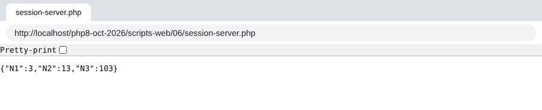
La 4e demande montre que les compteurs sont bien incrémentés. Il y a bien mémorisation des valeurs des compteurs au fil des demandes.
Les outils de développement du navigateur (F12, onglet [Réseau]) montrent les entêtes HTTP échangés. Nous allons les voir avec [curl]. Avec l'option [-c cookies.txt], [curl] enregistre dans le fichier [cookies.txt] les cookies reçus du serveur ; avec l'option [-b cookies.txt], il renvoie au serveur les cookies de ce fichier. Il se comporte alors comme un navigateur. 1re requête :
- l'entête [Set-Cookie] contient l'identifiant de session envoyé par le serveur dans sa réponse à la 1re demande du client ;
- le premier entête [Cache-Control] est fixé par [HttpFoundation] au démarrage de la session : la réponse, propre à ce client, ne doit pas être mise en cache par un intermédiaire ([private]) et doit être redemandée au serveur ([max-age=0]) ;
- la dernière ligne contient les trois compteurs initialisés .
Le fichier [cookies.txt] contient maintenant le cookie de session :
2e requête :
- [curl] a renvoyé l'identifiant de session avec l'entête HTTP [Cookie: PHPSESSID=…] ;
- dans sa réponse, le service web n'inclut plus d'entête [Set-Cookie]. C'est désormais le client qui a la charge d'envoyer l'identifiant à chacune de ses demandes ;
- dernière ligne : les compteurs ont été incrémentés .
17.10.2.2. Le client
Nous écrivons maintenant un script client du script serveur précédent. Dans sa gestion de la session, il doit se comporter comme le navigateur web :
- dans la réponse du serveur à sa première demande, il doit trouver l'identifiant de session que le serveur lui envoie. Il sait qu'il le trouvera dans l'entête HTTP [Set-Cookie] ;
- il doit, à chacune de ses demandes ultérieures, renvoyer au serveur l'identifiant qu'il a reçu. Il le fera avec l'entête HTTP [Cookie] .
Le client [session-client.php] est configuré par le fichier JSON [config-session-client.json] suivant :
Le code du client [session-client.php] est le suivant :
Commentaires
- ligne 29 : création du client HTTP ;
- ligne 31 : la variable [$sessionCookie] contiendra le cookie de session, sous la forme [PHPSESSID=xxx]. Elle vaut [null] tant que le serveur ne l'a pas envoyé ;
- ligne 34 : on va faire 10 fois la même requête au serveur [session-server.php] ;
- lignes 36-38 : si le cookie de session n'est pas encore connu, on envoie la commande [GET] sans l'entête [Cookie] ;
- lignes 39-43 : sinon, on envoie la commande [GET] avec l'entête [Cookie]. L'option [headers] de la méthode [request] est le tableau des entêtes HTTP à ajouter à la requête ;
- ligne 55 : le serveur web peut envoyer plusieurs entêtes [Set-Cookie]. Le cookie de session n'est que l'un d'entre eux. Il a la particularité d'être de la forme [PHPSESSID=xxx; …]. Si la réponse n'a pas d'entête [Set-Cookie], l'expression [$headers['set-cookie'] ?? []] rend un tableau vide et la boucle ne fait rien ;
- ligne 56 : on utilise une expression régulière pour trouver le cookie de session ;
- ligne 62 : une fois les 10 requêtes faites, on affiche la dernière réponse JSON du serveur .
Note : le client [HttpClient] de Symfony ne gère pas lui-même les cookies d'une requête à l'autre, d'où ce code. La gestion du cookie de session sera reprise dans les versions de l'application de calcul de l'impôt qui utilisent une session.
Résultats
L'exécution du script client provoque l'affichage suivant (nous n'en montrons que le début et la fin) :
- dans sa première réponse, le serveur envoie l'identifiant de session (entête [set-cookie]). Dans les réponses suivantes, il ne l'envoie plus ;
- dernière ligne : les trois compteurs [N1, N2, N3] ont bien été incrémentés 9 fois. Lors de la requête n° 1, ils ont été initialisés .
17.10.2.3. Une version sans HttpFoundation
Le script [session-server-natif.php] fait le même travail avec les seules fonctions de PHP :
- lignes 8-15 : démarrage de la session. Depuis PHP 7.0, la fonction [session_start] accepte un tableau d'options : ce sont les directives [session.*] du fichier [php.ini], sans leur préfixe [session.]. Elles ne valent que pour la requête en cours. Nous activons ici le mode strict et les attributs [HttpOnly] et [SameSite] du cookie de session, présentés au paragraphe sur le fichier [php.ini] ;
- lignes 17-19 : on parcourt le tableau [compteur => valeur initiale]. Pour chaque compteur, on l'incrémente s'il est dans la session [$_SESSION], sinon on l'y met avec sa valeur initiale ;
- ligne 22 : l'entête [Content-Type] de la réponse ;
- ligne 23 : le document JSON envoyé au client .
On exécute le même client avec la configuration [config-session-client-natif.json], qui désigne ce script : [php session-client.php config-session-client-natif.json]. Début de l'affichage :
- le cookie de session a maintenant les attributs [HttpOnly] et [SameSite=Lax] ;
- les entêtes [Expires], [Cache-Control] et [Pragma] fixés par PHP au démarrage de la session interdisent la mise en cache de la réponse (directive [session.cache_limiter = nocache]) .
La dernière ligne affichée est la même que précédemment :
17.10.3. Exemple 2
17.10.3.1. Le serveur
L'exemple suivant montre qu'on peut aussi sauvegarder dans la session les valeurs d'un tableau ou d'un objet. Nous allons mettre un objet [Personne] dans la session. La classe [Personne] du dossier [scripts-web/07] est celle de l'exemple JSON du dossier [scripts-web/03].
Le script serveur [session-server.php] du dossier [scripts-web/07] est le suivant :
Commentaires
- ligne 8 : la classe [Personne] doit être chargée avant le démarrage de la session : au démarrage, PHP désérialise les objets mis en session lors des requêtes précédentes, et il doit alors connaître leur classe ;
- lignes 15-16 : on récupère la session en cours et on l'active ;
- lignes 20-28 : on gère un tableau [tableau] mis en session. À chaque nouvelle requête, ses éléments sont incrémentés de 1. La fonction [array_map] applique une fonction à chaque élément d'un tableau et rend le tableau des résultats. La fonction est ici une fonction fléchée (arrow function), apparue avec PHP 7.4 : [fn(int $valeur): int => $valeur + 1] ;
- lignes 31-42 : on gère un tableau associatif [assoc] mis en session. À chaque nouvelle requête, ses éléments sont incrémentés de 1 ;
- lignes 45-53 : on gère un objet [Personne] mis en session. À chaque nouvelle requête, l'âge de cette personne est incrémenté de 1. On notera qu'il n'est pas nécessaire de remettre l'objet dans la session après l'avoir modifié : la session contient une référence sur cet objet, et c'est l'objet modifié qui sera sauvegardé à la fin du script ;
- lignes 57-64 : on envoie une réponse JSON au client : la chaîne JSON d'un tableau associatif .
Demandons ce script avec un navigateur. Les deux premières requêtes donnent les résultats suivants (F5 dans le navigateur pour la deuxième) :
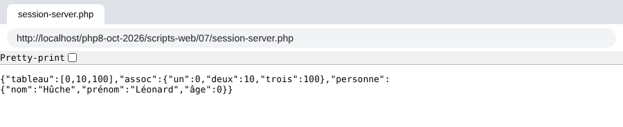
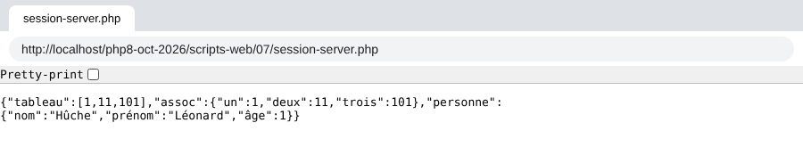
On voit qu'à la seconde requête, tous les compteurs ont été incrémentés.
17.10.3.2. Le client
Le client est le même que dans l'exemple 1. On lui donne seulement le fichier de configuration [config-session-client-07.json] :
L'exécution de la commande [php session-client.php config-session-client-07.json] produit les résultats suivants (début et fin) :
- dernière ligne : on voit que tous les compteurs ont été incrémentés 9 fois .
17.11. Authentification
Nous nous intéressons maintenant aux services web destinés à certains utilisateurs seulement. Le client doit alors s'identifier auprès du service web avant d'avoir sa réponse.
17.11.1. Le client
Le client [auth-client.php] est configuré par le fichier JSON [config-auth-client.json] suivant :
- ligne 2 : l'URL du service web ;
- lignes 3-4 : les identifiants de l'utilisateur .
Le code du client [auth-client.php] est le suivant :
Commentaires
- lignes 29-35 : on a passé un paramètre à la méthode statique [HttpClient::create], un tableau associatif d'options qui vaudront pour toutes les requêtes de ce client ;
- ligne 31 : l'option [auth_basic] a pour valeur un tableau à deux éléments [user, password]. C'est avec ces éléments que le client va s'authentifier auprès du service web. L'option [auth_basic] désigne un type d'authentification appelé [Basic], du nom de la valeur de l'entête HTTP [Authorization] que va émettre le client. Il existe d'autres types d'authentification ;
- lignes 33-34 : deux options utiles avec le protocole HTTPS, que nous verrons un peu plus loin. Elles valent [true] si le fichier de configuration ne dit rien ;
- en-dehors de ce code, le client est identique aux précédents .
Pour voir les entêtes HTTP envoyés par le client, nous le connectons à notre serveur espion, lancé sur le port 100, avec la configuration [config-espion.json] suivante :
La commande [php auth-client.php config-espion.json] donne l'affichage suivant dans le terminal du serveur espion :
- ligne 8 : on voit l'entête [Authorization: Basic XXX] envoyé par le client. La chaîne XXX est la chaîne [user:password] codée en Base64 .
Pour vous en assurer, vous pouvez décoder la chaîne reçue avec la fonction [base64_decode] de PHP. L'option [-r] de la commande [php] exécute le code PHP qui la suit :
Le codage Base64 n'est pas un chiffrement : n'importe qui peut décoder la chaîne.
17.11.2. Le serveur
Le serveur [auth-server.php] est le suivant :
Commentaires
- ligne 12 : les utilisateurs autorisés, ici un seul, de login [admin] et de mot de passe [admin] ;
- ligne 17 : la méthode [getUser] de l'objet [Request] rend l'identifiant de l'utilisateur, extrait par PHP de l'entête [Authorization: Basic …] envoyé par le client, ou [null] si le client n'a pas envoyé cet entête. Sans [HttpFoundation], on le trouverait dans [$_SERVER['PHP_AUTH_USER']] ;
- ligne 18 : de même pour le mot de passe ([$_SERVER['PHP_AUTH_PW']]) ;
- lignes 20-22 : on cherche l'utilisateur qui veut se connecter dans la liste des utilisateurs autorisés. Les mots de passe sont comparés avec la fonction [hash_equals] plutôt qu'avec l'opérateur [===] : son temps d'exécution ne dépend pas de l'endroit où les deux chaînes diffèrent, ce qui empêche un attaquant de deviner un mot de passe caractère par caractère en mesurant les temps de réponse ;
- lignes 26-29 : si l'utilisateur n'a pas été reconnu, on envoie au client :
- le code [401 Unauthorized] ;
- un entête [WWW-Authenticate: Basic realm="quelque chose"]. Les navigateurs reconnaissent cet entête et font apparaître une fenêtre d'authentification invitant l'utilisateur à s'identifier. Les entêtes HTTP doivent être écrits avec les seuls caractères ASCII. Le script PHP 7 utilisait la fonction [utf8_decode] pour convertir une chaîne UTF-8 en ISO-8859-1 ; cette fonction est obsolète depuis PHP 8.2. Si on en avait besoin, on utiliserait [mb_convert_encoding($texte, 'ISO-8859-1', 'UTF-8')]. Notre texte [PHP 8 par l'exemple] n'utilise que des caractères ASCII ;
- lignes 30-32 : si l'utilisateur a été reconnu, on envoie au client le code [200 OK] ;
- ligne 35 : la réponse n'a pas de document, seulement une ligne de statut et des entêtes .
Demandons l'URL [http://localhost/php8-oct-2026/scripts-web/08/auth-server.php] avec un navigateur : celui-ci affiche une fenêtre de connexion. S'il est saisi des identifiants erronés, le navigateur représente indéfiniment cette fenêtre jusqu'à ce que des identifiants corrects soient tapés : à chaque fois, un aller-retour avec le serveur a lieu, avec toujours la même réponse, qui déclenche la fenêtre d'authentification du navigateur. Voici la réponse du serveur sans identifiants :
- ligne 2 : le code [401 Unauthorized] de la réponse ;
- l'entête HTTP [WWW-Authenticate] invite le client à s'authentifier ;
- le corps de la réponse est vide .
Avec l'option [-u admin:admin], [curl] envoie les identifiants [admin, admin] :
- ligne 2 : le code [200 OK] de la réponse ;
- le corps de la réponse est vide .
Exécutons le client [auth-client.php] avec l'utilisateur autorisé [admin, admin]. La réponse du serveur est la suivante :
- ligne 2 : le serveur a répondu [200 OK] ;
- dernière ligne : la réponse n'a pas de contenu .
Exécutons maintenant le client avec un mot de passe erroné, grâce au fichier de configuration [config-auth-client-ko.json] :
La réponse est la suivante :
- ligne 2 : le client a bien reçu un code 401 ;
- ligne 4 : une exception a été lancée dans le client. C'est le client [HttpClient] de Symfony qui l'a lancée : il lance une exception de type [ClientExceptionInterface] (codes 4xx) ou [ServerExceptionInterface] (codes 5xx) lorsque le code de statut de la réponse HTTP indique une erreur et que le client essaie de lire les entêtes ou le contenu de la réponse. Le message de l'exception montre que le serveur a répondu [401 Unauthorized] pour indiquer que l'utilisateur n'avait pas été reconnu. Pour lire malgré tout les entêtes ou le document d'une réponse en erreur, on écrit [$response->getHeaders(false)] ou [$response->getContent(false)]. Nous l'utiliserons dans l'application de calcul de l'impôt, dont le serveur renvoie un message d'erreur JSON avec ses codes d'erreur .
17.11.2.1. Quand le serveur répond toujours 401
Avec certaines installations d'[Apache], le serveur répond [401 Unauthorized] à chaque requête, même avec les bons identifiants. La cause n'est pas le script PHP : c'est la façon dont [Apache] exécute PHP. Lorsque PHP est un module d'[Apache] (mod_php), il reçoit tous les entêtes HTTP de la requête. Mais lorsqu'[Apache] fait exécuter PHP par un processus séparé, selon le protocole FastCGI (modules [mod_fcgid] ou [mod_proxy_fcgi]), il ne lui transmet pas, par défaut, l'entête [Authorization] qui porte les identifiants : pour PHP, le client ne s'est jamais authentifié. Le dossier [scripts-web] contient pour cela le fichier [.htaccess] suivant, qui s'applique à tous ses sous-dossiers :
- ligne 6 : demande à [Apache] (version 2.4.13 et suivantes) de transmettre l'entête [Authorization] aux programmes FastCGI ;
- ligne 7 : une seconde méthode, plus ancienne, qui recopie l'entête [Authorization] dans la variable d'environnement [HTTP_AUTHORIZATION]. La classe [Request] de Symfony sait y lire les identifiants .
Avec mod_php, ces deux lignes sont sans effet. On vérifie que le serveur reçoit bien les identifiants avec [curl], qui ne mémorise rien d'une requête à l'autre, contrairement au navigateur : [curl -i -u admin:admin "http://localhost/php8-oct-2026/scripts-web/08/auth-server.php"] doit rendre le code 200. Si le navigateur, lui, continue d'afficher sa fenêtre d'authentification, il faut le fermer complètement (il mémorise les identifiants refusés pendant toute la session) ou utiliser une fenêtre de navigation privée.
17.11.3. Sécuriser la connexion client / serveur
Nous avons vu que pour s'authentifier auprès du serveur, le client envoyait l'entête :
Si cette ligne est interceptée par un programme espion, celui-ci pourra aisément retrouver les identifiants [login, mot de passe] encodés en Base64 dans la chaîne [YWRtaW46YWRtaW4=]. Pour cette raison, il faut que l'authentification ait lieu dans une connexion sécurisée entre le client et le serveur. Les URL sécurisées utilisent le protocole [HTTPS] au lieu du protocole HTTP. Le protocole [HTTPS] est le protocole HTTP au sein d'une connexion client / serveur chiffrée par le protocole TLS (Transport Layer Security, le successeur de SSL). Les URL sécurisées sont de la forme [https://chemin_document]. Le port par défaut du protocole HTTPS est le port 443.
Tous les serveurs web n'acceptent pas les URL de cette forme : il faut les configurer pour cela. Le serveur [Apache] de [Laragon] sait utiliser le protocole HTTPS, mais celui-ci n'est pas actif par défaut. On l'active par le menu de [Laragon] : clic droit dans la fenêtre de [Laragon], puis [Apache / SSL / Enabled]. Le serveur [Apache] est alors redémarré, et la fenêtre de [Laragon] montre qu'il écoute maintenant sur deux ports : le port 80 (HTTP) et le port 443 (HTTPS). Lors de cette activation, [Laragon] a généré un certificat dit autosigné pour le serveur.
Les navigateurs, eux, refusent par défaut un certificat autosigné. Avec un certificat simplement inconnu, [Chrome] et [Edge] affichent une page d'avertissement (« Votre connexion n'est pas privée ») avec un bouton [Paramètres avancés] puis un lien [Continuer vers localhost (dangereux)]. Mais ce lien n'est pas toujours proposé : il manque notamment lorsque le certificat est jugé non conforme, ou lorsque le navigateur a mémorisé que le site [localhost] doit toujours être servi en HTTPS avec un certificat valide (mécanisme HSTS). La bonne solution est alors de faire confiance au certificat de [Laragon] :
- dans le menu de [Laragon], prendre [Apache / SSL / Add laragon.crt to Trust Store]. [Windows] demande de confirmer l'ajout du certificat aux autorités de certification racines de confiance de l'utilisateur ; on accepte ;
- fermer complètement le navigateur (toutes ses fenêtres) et le relancer : [Chrome] et [Edge] utilisent le magasin de certificats de [Windows], et le certificat de [Laragon] est désormais accepté sans avertissement pour [https://localhost] ;
- si le navigateur refuse encore la page, supprimer la règle HSTS qu'il a pu mémoriser pour [localhost] : ouvrir la page [chrome://net-internals/#hsts] (ou [edge://net-internals/#hsts] pour [Edge]), taper [localhost] dans la zone [Delete domain security policies] et cliquer sur [Delete] .
En dernier recours, et sur sa propre machine seulement, [Chrome] et [Edge] acceptent de passer outre l'avertissement si l'on tape au clavier, sur la page d'erreur elle-même (sans cliquer dans une zone de saisie), les mots [thisisunsafe]. C'est une porte de service des navigateurs, prévue pour les développeurs : à ne jamais utiliser pour un site que l'on ne contrôle pas. Si aucun de ces moyens ne fonctionne, on utilisera dans le navigateur l'URL [http://localhost/...] : nous verrons au chapitre de la version 8 du calcul de l'impôt pourquoi ce n'est pas une imprudence sur sa propre machine.
Ajouter le certificat au magasin de [Windows] ne change rien pour nos clients PHP : la bibliothèque [curl], qu'utilise PHP, a sa propre liste d'autorités de certification. C'est ce que montre l'exemple suivant.
Maintenant que nous avons un serveur sécurisé, donnons au client [auth-client.php] le fichier de configuration [config-auth-client-https-verify.json] suivant :
- ligne 2 : le protocole est devenu [https]. Le port n'est pas précisé : c'est le port 443 par défaut .
Exécutons le client avec cette configuration. Les résultats console sont les suivants :
Le client [HttpClient] de Symfony a lancé une exception car il n'a pas accepté le certificat que lui a envoyé le serveur. La communication TLS s'appuie sur des certificats délivrés par des autorités de certification reconnues. Le certificat généré par [Laragon] est un certificat autosigné : il n'est validé par aucune autorité de certification. Le client l'a donc refusé, avec raison : rien ne prouve qu'il parle au vrai serveur et non à un imposteur.
Il est possible de demander à [HttpClient] de ne pas vérifier le certificat envoyé par le serveur. Cela se fait avec les options [verify_peer] et [verify_host] de la méthode [HttpClient::create], que notre client lit dans son fichier de configuration. Le fichier [config-auth-client-https.json] les met à [false] :
- ligne 5 : ne pas vérifier que le certificat a été délivré par une autorité de certification reconnue ;
- ligne 6 : ne pas vérifier que le certificat a été délivré pour la machine contactée ([localhost] ici) .
Nous avions déjà rencontré ce problème au chapitre précédent, avec la bibliothèque [libcurl] et son option [CURLOPT_SSL_VERIFYPEER]. Le client [HttpClient] de Symfony est d'ailleurs un client [curl] lorsque l'extension [curl] est activée dans la configuration de PHP, comme c'est le cas ici : la classe instanciée par [HttpClient::create] est alors [CurlHttpClient], qui traduit ses options en options [curl] : [verify_peer] devient [CURLOPT_SSL_VERIFYPEER] et [verify_host] devient [CURLOPT_SSL_VERIFYHOST].
Si maintenant nous exécutons le client avec la commande [php auth-client.php config-auth-client-https.json], nous obtenons le résultat suivant :
L'utilisateur a bien été reconnu. Avec [curl], l'option [-k] (ou [--insecure]) joue le même rôle que nos deux options :
Note : désactiver la vérification du certificat n'est acceptable qu'en développement, sur sa propre machine. Une solution plus propre consiste à indiquer au client le certificat du serveur, avec l'option [cafile] de [HttpClient] (option [--cacert] de [curl]) : la vérification reste active, et le client accepte ce certificat-là. En production, le serveur a un certificat délivré par une autorité de certification reconnue (par exemple, gratuitement, par Let's Encrypt), et aucune option n'est nécessaire.
Désormais, nous savons nous authentifier auprès d'un serveur sécurisé.